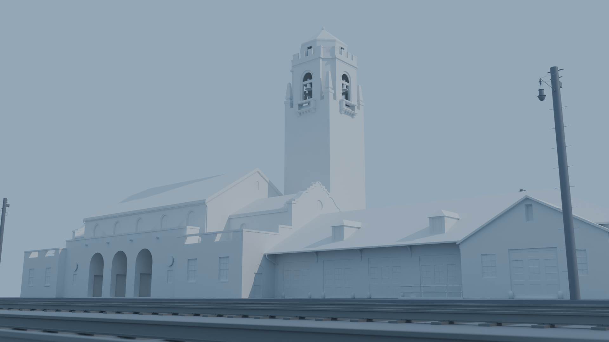
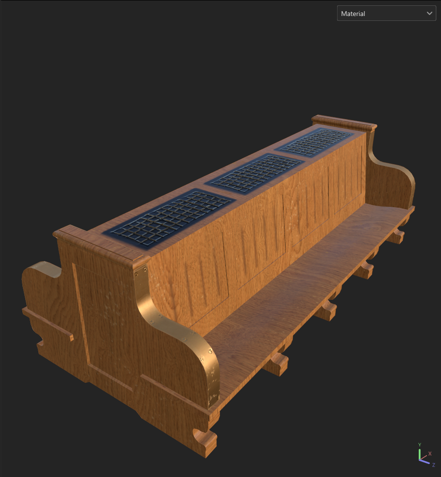
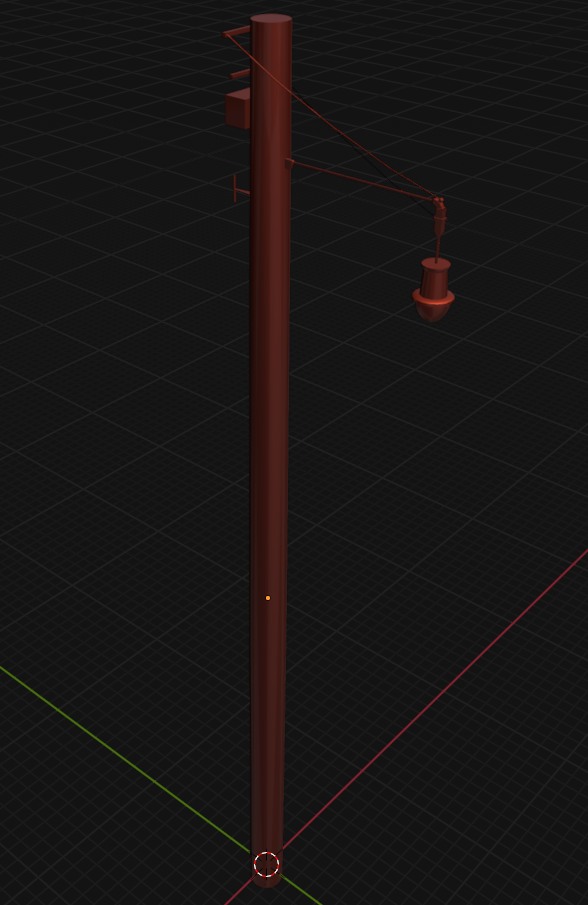
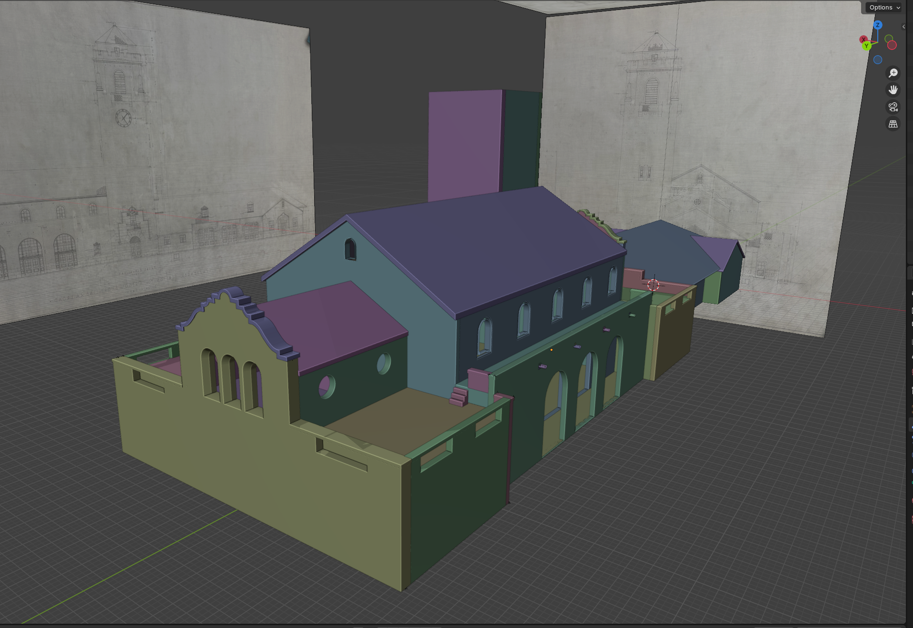

BOISE TRAIN DEPOT
(ongoing project)





The Boise Train Depot Project is a project we started in University. The goal of the project was to
recreate the Boise Train Depot as it looked in the 1920s/1930s. It was built in 1925, but to
get the full experience of the Depot, users would benefit from also seeing the neighboring Platt Gardens
as well, which is why we built it around said time period. My team and I modeled, textured, scanned,
and animated everything ourselves. We used photos and blueprints from the time period to make everything
as accurate as possible. Once the project is complete and live on the Boise Train Depot website, a link
will be provided.